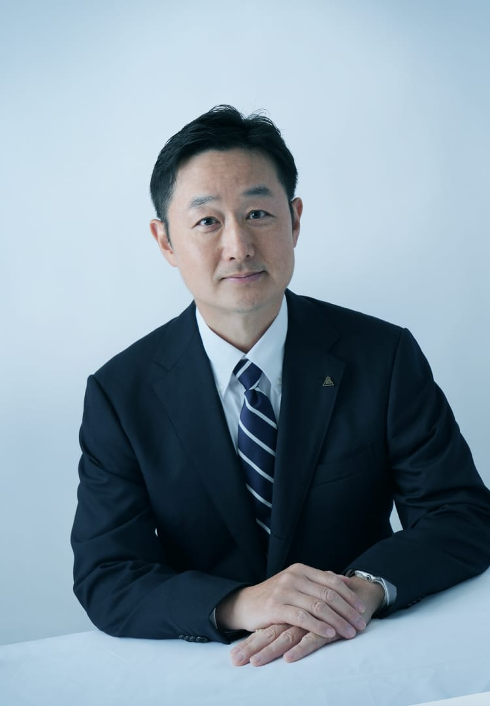

ABOUT TOEI
事業内容 BUSINESS
映画
だけじゃない
東映の事業
東映といえば映画のイメージが強いかもしれません。でも実際は多様な映像制作を中心に、
多角的なビジネスを展開している「総合コンテンツ企業」。様々な領域から、世界にエンタテインメントを提供しています。
01
映 画
02
テレビドラマ
03
教育映像
04
配 信
05
放映権・ビデオグラム化権
06
ビデオ
07
マーチャンダイジング
08
海外販売
09
東京撮影所地区
10
京都撮影所地区
11
イベント
12
映画館
13
不動産事業
14
ホテル
ACTION!
東映を知る
ABOUT TOEI
仕事を知る
WORKS
先輩に聞きたい
INTERVIEW 01
先輩に聞きたい
INTERVIEW 02
先輩に聞きたい
INTERVIEW 03
先輩に聞きたい
INTERVIEW 04
先輩に聞きたい
INTERVIEW 05
新卒座談会
NEW FACE'S TALK
社員座談会
4TH YEAR TRUTH
福利厚生
IN-HOUSE SYSTEMS
採用に込める想い
HR MESSAGE
採用情報
RECRUIT
ENTRY 2027
ACTION!
東映を知る
ABOUT TOEI
仕事を知る
WORKS
先輩に聞きたい
INTERVIEW 01
先輩に聞きたい
INTERVIEW 02
先輩に聞きたい
INTERVIEW 03
先輩に聞きたい
INTERVIEW 04
先輩に聞きたい
INTERVIEW 05
新卒座談会
NEW FACE'S TALK
社員座談会
4TH YEAR TRUTH
福利厚生
IN-HOUSE SYSTEMS
採用に込める想い
HR MESSAGE
採用情報
RECRUIT
ENTRY 2027
東映の歴史 TOEI HISTORY
3分でわかる
東映の歴史
作品はもちろん、数々の記録やコンテンツ制作の手法などでエンタテインメント界を牽引してきた東映。ご紹介したいことはたくさんあるのですが、ぐっと絞って、まずは知っておいて欲しい出来事をまとめました。
採用責任者メッセージ MESSAGE

上席執行役員 人事部長 重盛 雄一
企業理念 PHILOSOPHY
全世界で
人々に愛される
エンタテインメントの
創造発信
東映グループは企業理念に基づき、“心の糧となるコンテンツを創り続ける”“いきいき働く仲間・職場を守り続ける”“世界の笑顔を増やし続ける”この３つのアクションを実行し、良質なコンテンツを世界に届け続けることを社会的使命であると考えています。
会社概要 COMPANY PROFILE
- 会社名
- 東映株式会社（TOEI COMPANY, LTD.）
- 代表者
- 代表取締役社長 吉村文雄
- 所在地
- 〒104-8108 東京都中央区銀座3丁目2番17号
03-3535-4641（代表）
- 設立
年月日 - 1949年（昭和24年）10月1日
※創立年月日1951年（昭和26年）4月1日
- 資本金
- 117億709万2,928円
- 株式上場
- 東証プライム市場上場
- 従業員数
- 390名 2024年10月1日現在
- 事業所
-
本社
〒104-0061 東京都中央区銀座3-2-17西日本支社
〒530-0001 大阪市北区梅田1-12-6 E-maビル14F東京撮影所
〒178-8666 東京都練馬区東大泉2-34-5京都撮影所
〒616-8163 京都市右京区太秦西蜂岡町9